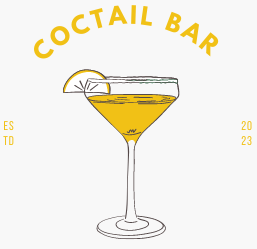
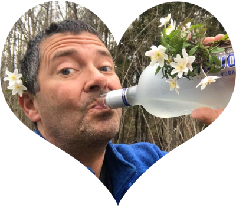
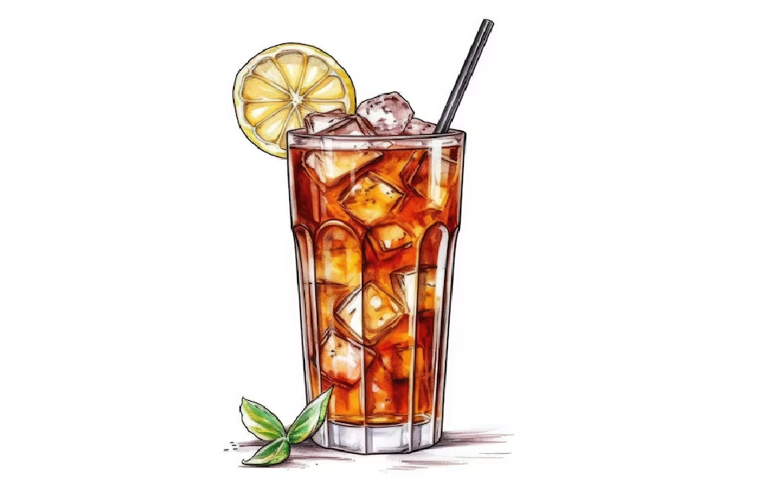
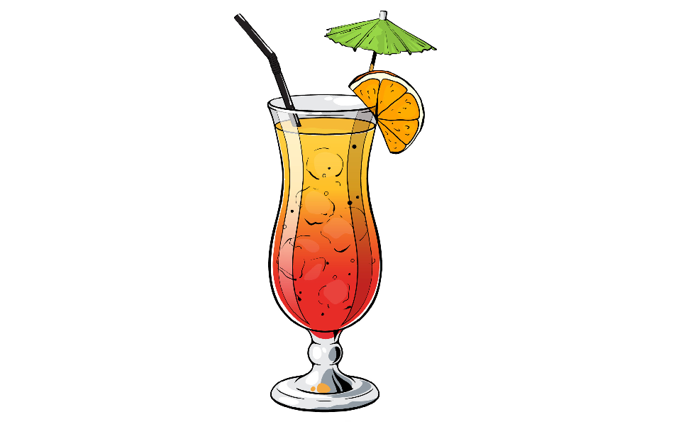
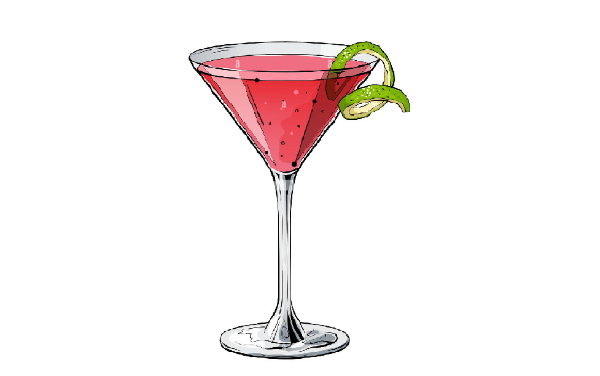
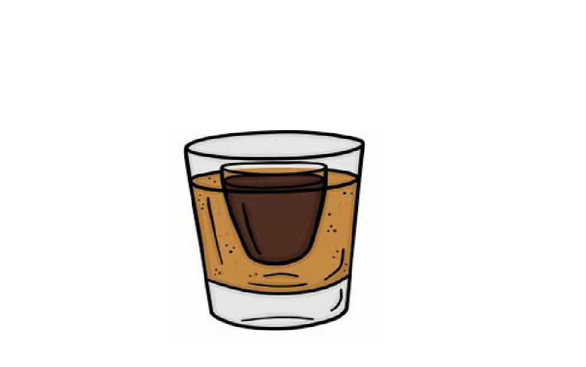

Skål!

Składniki:
75ml - Prosecco
50ml - Aperol
25ml - woda mineralna gazowana
kostki lodu
czerwona pomarańcza
Dawaj
Trwa robienie drina...
Aperol Spritz
Aperol Spritz stał się jednym z najbardziej popularnych koktajli na świecie, a pozycja w czołowej dziesiątce najlepiej sprzedających się drinków na świecie dobitnie o tym świadczy. Jego historia sięga roku 1919, kiedy to włoskie rodzeństwo Barbieri wprowadziło na rynek aperitif na bazie goryczki, gorzkiej pomarańczy, rabarbaru i wyciągu z ziół. Napój już w latach pięćdziesiątych ubiegłego wieku był chętnie serwowaną alternatywą dla weneckiej mieszanki wina i gazowanej wody. Apogeum sławy Aperol Spritz zawdzięcza przejęciu marki przez firmę Campari, która dołożyła wszelkich starań aby rozreklamować koktajl w przestrzeni publicznej, między innymi dzięki wprowadzeniu na rynek w 2011 drinka w butelce gotowego do podania.
Tom Collins
Tom Collins to jeden z najpopularniejszych drinków na bazie ginu – znany i podawany w barach na całym świecie. Tom Collins to koktajl wykonany z ginu, soku z cytryny, syropu cukrowego i wody gazowanej. Drink ten jest idealny na letnie upały. Pierwsza wzmianka o tym drinku pochodzi z roku 1876 kiedy to Jerry Thomas umieścił przepis na ten koktajl w swojej książce pod tytułem „Przewodnik barmana”.
Black Russian
Black Russian, czyli Czarny Rosjanin to mocny i klasyczny drink, który składa się jedynie z dwóch składników, przez co jest bardzo prosty do przygotowania. W skład drinka wchodzi wódka i likier kawowy, a żeby podkreślić wyrazistość smaku zaleca się serwowanie napoju na lodzie. Historia napoju sięga lat 50, a pierwszy raz, kiedy został zaserwowany miał miejsce w Belgii przez belgijskiego barmana dla amerykańskiej ambasador. Prosty skład oraz wyrazisty smak sprawiają, że drink zyskał dużą popularność. Jest kojarzony z Białym Rosjaninem, jednak nie posiada w swoim składzie mleka, ani śmietanki.
Mojito
Mało jest na świecie drinków, które doczekały się takiej popularności jak mojito. Pomimo względnej prostoty wykonania i bogactwa wariacji na temat składników, tradycyjny przepis na ten koktajl jest jeden i ten sam od XIX wieku. Pomysł na połączenie białego rumu z sokiem limonkowym, cukrem, miętą i wodą sodową powstał na Kubie, a konkretniej na ulicach Hawany. Wartym uzupełnienia faktem, jest prawdopodobna historia stworzenia napoju alkoholowego z sokami owoców tropikalnych i orzeźwiającymi ziołami przez żeglarzy Sir Francisa Drake’a na obszarze Morza Karaibskiego, podczas jego wyprawy dookoła Ziemi. Jako warianty, najczęściej stosuje się do uzupełniania koktajlu toniki, a także eksperymenty z aromatyzowanymi gatunkami rumu.

Long Island Iced Tea
Long Island Iced Tea to koktajl, który swój początek miał w latach siedemdziesiątych XX wieku w Oak Beach Inn na wschodnim wybrzeżu USA. Twórca drinka – Robert “Rosebud” Butt w swoim przepisie zainspirował się koktajlem podawanym już od 1920 roku (szczególnie w okresie prohibicji) w stanie Tennessee. Przepis zawiera w sobie takie składniki alkoholowe jak tequila, wódka, biały rum oraz triple sec. Wszystkie alkohole przyprawione są syropem, sokiem z cytrusów oraz odrobiną coli. Prostota przyrządzenia polega na przemieszaniu składników i podaniu ich w szklance typu highball wypełnionej lodem.

Sex on the beach
Sex on the beach to typowo wakacyjny koktajl, serwowany na kostkach lodu ze słomką i plastrem cytrusa. Historia powstania tego drinka jest stosunkowo krótka i sięga końca lat osiemdziesiątych na Florydzie. Barmani postanowili wówczas połączyć napoje: Cape Cod i Fuzzy Navel. Właśnie ten fakt fuzji dwóch mieszanek był powodem do wymyślenia znanej na całym świecie nazwy. Obecnie wyróżnimy typy koktajlu – jeden zaakceptowany przez IBA i ten pokrewny, promowany przez Mr. Boston Official Bartender’s Guide. Aby sporządzić drink klasyczny należy przygotować: wódkę, brzoskwiniowy sznaps, sok pomarańczowy i żurawinowy a także wysoką szklankę.

Cosmopolitan
Cosmopolitan jest prostym do wykonania alkoholem na bazie aromatyzowanej cytryną wódki, likieru triple sec, soku żurawinowego oraz ze świeżo wyciśniętej limonki. Podaje się go bez lodu w koktajlowych kieliszkach. Historia tego napoju jest bardzo zawiła. Część barmanów twierdzi, iż powstał on w latach siedemdziesiątych XX wieku w Stanach Zjednoczonych, inna zaś grupa wspomina o powstaniu drinka około dziesięciu lat później. Kwestia sporna dotyczy także nazwiska autora przepisu. Można wymienić co najmniej pięciu rzekomych wynalazców receptury. Do ciekawostek należy fakt, iż podobny skład miał mieć koktajl, wprowadzony do książki barmańskiej Pioneers of Mixing at Elite Bars, już w 1934 roku.

Jagerbomb
Jagerbomb to prawdopodobnie najbardziej znany drink z likierem ziołowo-korzennym Jagermeister. Jest on niezwykle prosty w przygotowaniu – potrzebujemy jedynie Redbulla i Jagermeister’a. Drink na pierwszy rzut oka może wydawać się mieszanką wybuchową, ale jeśli lubimy smak ‘energetyków’ to wtedy to połączenie na pewno przypadnie nam do gustu. Polecam spróbować!
Połącz
Rozłącz
Brak połączenia